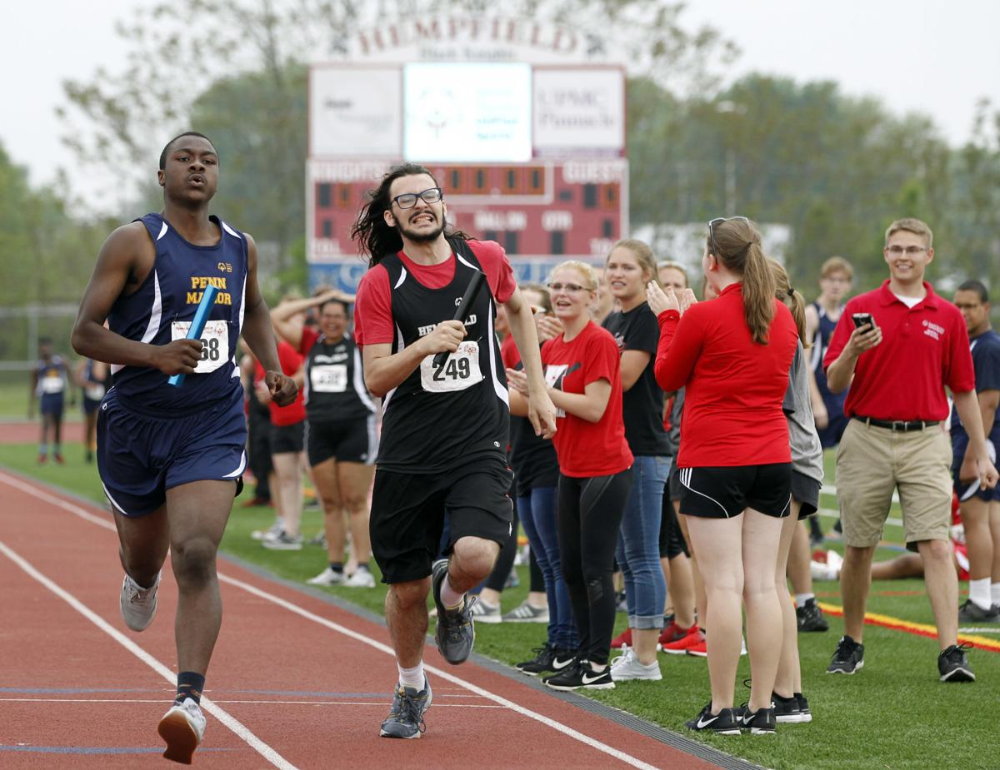

Accomplishments
Honors & Distinctions
- In my senior year I created a 40 page department honors thesis. My research paper was centered around a controversial search and rescue operation during the Vietnam War known as BAT-21. I plan to link an abstract of my research paper and the full text to my accomplishments page.
- Recipient of the Dr. Robert D. and Roma J. Sayre Excellence in American History Scholarship
BA in History and BSE in Social Studies Education
- Attained a 3.81 GPA while completing dual majors within five years at Millersville University
- Graduated magna cum laude with honors and department honors distinction
- Made Dean’s List Fall ’11, Spring ’13, Fall ’13, Spring ’14, Fall ’14, Spring ’15, Fall ’15
Extracurriculars & Coaching
- For three years I have coached chess at both Hempfield and Warwick High School. This most recent season, our team won second place in the state tournament.
- I served as an unified track coach for three years. Unified Track is an organization established by the special olympics that combines regular education and special education into one team where all students compete together as a true team.
- I have also acted as the school advisor to the Warwick Philosophy Club since my first year teaching there.
Graduate Courses Completed
- Introduction to Digital Media - IS_LT7361, Fall 2019 Missorui University
- Technology to Enhance Learning - IS_LT9467, Spring 2020 Missouri University